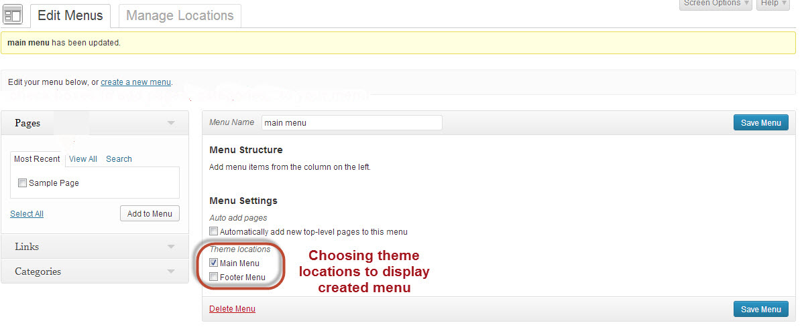

A. Upload and install the theme - top
Note:
As a pre-requisite you will need a copy of WordPress version 3.6 or higher installed and running on your server.
After you have successfully installed WordPress on your server, you are now ready to install the Passion theme. The process of installation is very easy. Here are the simple steps to upload and install the Passion theme:
- Download the Passion theme from your downloads page
- Unzip this file
- Once the file has been unzipped you will notice a file named Passion.zip. This is theme files.
- Login to the WordPress control panel of your website
- From your Dashboard, go to Appearance > Themes
- Step 1. Click "Install Themes"
- Step 2. Click “Upload”
- Step 3. Find the file Passion.zip on your computer and click Install Now
- Step 4. Active theme: After successful installation you can either click Activate or go to Appearance » Themes and click Activate to make this the current theme.
After activation when you preview the theme you will notice that it looks empty. This is because no content has been added and no configuration has been done yet.
B. Demo Content - top
The theme comes with a demo package. This package includes posts, pages, comments, categories, tags and so on. This demo package is imperative in helping you to learn how the theme works. To import demo content, you can follow these steps:
- Go to Tools -> Import and select the WordPress option. If you are prompted to install the WordPress Importer plugin you should do this.
- Click the Browse button and locate the demo.xml file that is inside the theme folder and double click the file to select it and then click the Upload file and import button.
- A new screen will appear, check the Download and import file attachments option and click Submit.
C. Updating The Theme - top
Once a new update becomes available for the theme, you will notice an update notification in the admin panel. To apply the update the theme needs to be downloaded once again and then reinstalled following the steps 1 – 5 mentioned in section A above.
E. Theme Options - top
Go to Passion > Theme Options.You will find all the options that the Passion theme offers right here. Here they are:

General Setting
- Logo - Favicon - Apple Icon: You can upload your logo and adjust margin, upload your custom favicon. Upload your apple icon (152x152). This image will be crop to multi size for iPhone(retina), iPad(retina)
- Header :
- Choosing show or hide search form.
- Headline
- Enter the prefix.
- Choosing the categories to show the posts.
- Choosing the tags to show the posts.
- Choosing the post format to show the posts.
- You can choosing combine tags, categories, format to show posts.
- Enter the number of posts to show
- Top banner
- Choosing the image to make the top banner
- Enter the link to direct.
- Choosing the target : open a new tab or no
- Custom content
- Footer:
- Enter footer information: Enter the content you want to display in your footer (e.g. copyright text).
Blog Post
- For each article in the blog post, you can choose show either the Excerpt or Full content or enter the number character to limit.
- Choosing the blog thumbnail styles
- Choosing Enable or Disable the Post format. If value is Yes, thumbnails has been replaced by video, audio or gallery shortcode
- Choosing show or hide : the view count, comment count, and created date
Single Post
- Meta data :
- Choosing show or hide the Thumbnail (standard post) .
- Choosing show or hide the Thumbnail ( for other post format) .
- Choosing show or hide the category.
- Choosing show or hide the created date.
- Choosing show or hide the view count.
- Choosing show or hide the comment count.
- Author :
- Choosing show or hide the autor information.
- Choosing show or hide the author's social links
- Previous & Next Post Links :
- Choosing show or hide Previous & Next Post Links.
- Choosing show or hide the same categories
- Comment System: Show or hide the comment system
- Related Posts: You can choose the related posts get by tag or category and limit the number of post.
Social Links
- RSS URL: Display the RSS feed button with the default RSS feed or enter a custom feed below. Enter "HIDE" if you want to hide it
- We provided a lot of social links. Enter your social links
Typography
There are more than 632 various fonts type to select
- All content- body tag: Choosing font style to enable customization the font size, font weight, line height
- Main content- post, page details: Choosing font style to enable customization the font size, font weight, line height
- Navigation: Choosing font style to enable customization the font size, font weight, line height
- Navigation- top menu: Choosing font style to enable customization the font size, font weight, line height
- Navigation- primary menu: Choosing font style to enable customization the font size, font weight, line height
- Navigation- secondary menu: Choosing font style to enable customization the font size, font weight, line height
- Navigation- bottom menu: Choosing font style to enable customization the font size, font weight, line height
- Widget title: Choosing font style to enable customization the font size, font weight, line height
- Heading title: Choosing font style to enable customization the font size, font weight, line height
Extra
Additional Feature
- Custom thumbnail for each post: Choosing enable/disable Custom thumbnail for each post. If you choose enable, you can customize for each post when creating a new post
- Breakcrumb: Choosing show or hide the breakcrumb in the posts
- Optimize for mobile (tablet): this feature will auto detect thedevice - mobile (tablet) - and convert the image size to small. The load time of page is faster.
Lightbox (Pretty Photo)
- Play video on lighbox: Choosing yes/no
- Skin: Choosing the skin type
- Modal mode: Choosing enable/disable. If set to Yes, only the close button will close the window
- Title: Choosing show or hide title of lightboxes
- Sharing with Facebook, Twitter: Choosing show or hide the Sharing button with Facebook, Twitter
- Overlay Opacity: Choosing the Overlay Opacity rate
Youtube shortcode
- Video information: If you set the parameter value to Hide, then the player will not display information like the video title and uploader before the video starts playing.
- Theme: Choosing the light style or dark style
- Coltrols
- HD playback by default: This has no effect on the Chromeless Player and also has no effect if an HD version of the video is not available.
- Related video: Choosing show or hide
Vimeo shortcode
- Color: Select color( Specify the color of the video controls)
- Title: Choosing show or hide
- Byline: Show the user's byline on the video
- Portrait: Show the user's portrait on the video.
Color scheme
- Pre defined colors Select Pre defined colors
- Custom color:
- Primary color: Changing the main color of the theme.
- Link Color: Changing the color of the tags
- Link Color hover: Changing the color of the tags when hover
- Text color: Changing the color of body, post content, widget content, ...
- Heading Color: Changing the color of heading tags
- Menu item link color: Changing the color of Menu item link
- Menu item link color hover (active): Changing the color of Menu item link(active) when hover
Contact
Custom CSS
- You can add additional CSS to your code. This CSS code is saved in the database and is not lost when the theme is updated.
Seo
- SEO - Search engine optimization: The theme support Search engine optimization
- Google analytics
- Website Verification Services
After enter each above option, click on Save button.
F.Create Categories and Posts - top
As you can imagine most of the site content will be posts and images associated with such posts. Categories allow for a broad grouping of such post topics. Now we will start creating categories and publish a few posts.
F.1. Create Category
- Go to Posts > Categories
- Enter new Category name.
- Scroll down and click on "Add Category". A newly created category will appear . You can then repeat the steps to create some more categories like Fashion, News, Sports, Lifestyle and so on.
With our KOPATHEME Framework, you can customize the layout for each category. Follow the procedures listed below:
- Click Category name that you would like to edit
-
Scroll down to the page bottom, as you see in the following image.
- In Theme Options, you setted the default blog thumbnail. If you want to customize any categories , you go to edit that category> Custom blog thumbnail styles
- In Settings=> Reading. You can set the number of posts to show on blog page. To customize any categories, go to edit that category> Custom the number of posts to display on page
- You also can customize to display the format of the content .

- Now, you can select layout and sidebar for this category
E.2. Create posts
Posts are usually stored under Categories and/or Tags so you can keep related topics together. Now, we will create some posts for our category.
- Go to Posts > Add New. Then, enter the Post Title, Post Content and Post Excerpt
- Check on the categories
- Scroll down and click on the "Set featured image" link on right-bottom side of your page. A small box will appear. Click on "Upload File". Browse and select the file from your hard-drive and upload. Finally set it as “Featured Image" to complete the process.
- Finally , assign the post to an appropriate category and click "Publish" butto to make the post live.
With our very flexible KOPATHEME Framework, you can customize the layout for each individual post. The procedure is as same as to customize layout for category above

To create a custom menu, go to Appearance > Menus in your dashboard.
Creating a Custom Menu
- To create a custom navigation menu, in "Edit Menus" tab, click Create a New Menu. Then type menu name, click "Create Menu" button.
- Select a menu to edit:

- Adding Pages and Categories to Your Menu: Adding pages or Categories to your menu is as simple as checking the proper boxes for the pages you want and then clicking Add to Menu.
- Creating a custom menu allows you to do the following things:
- Change the order of pages in your menu, or delete them.
- Create nested sub-menus of links, also referred to as “drop-down” menus
- Create links to category pages allowing you to collect together posts based on that category
- Add custom links to other sites, such as a link to your Twitter or Instagram profile
- Note: When we click on any menu, we can customize this menu
- Enter the Navigation Label to display in the menu.
- Enter the Title Attribute which dislay when you hover on label's page
Manage Menus Location
This theme supports 4 menus.In "Manage Locations" tab, you have to select menus to display for each location

Be sure to click Save Menu each time you make changes to your custom menu.
G. Custom Shortcode Generator - top
It would be imposible to remember the syntax of every shortcodes available options associated with it. Our shorcodes generator is an easy way for you to place a shortcode in the theme to display the content. Within the "Page" or "Post" or Kopa Text Widget, you can see the Visual Shortcode. Just click on the shortcode you need then it will be added to the content
Shortcodes avaiable with this theme
This theme comes with following shortcode to display the content
- Column shortcode: Click Grid, choosing column shortcodes
- Dropcap shortcode
- Button shortcodes
- Alert box shortcode
- Tabs Shortcode: Click container=> Tab
- Accordions shortcode: click container=> Accordion
- Toggles shortcode: Click container=> Toggle
- Caption shortcodes
- Share this post shortcode: using posts to display the share this post link
- Video shortcodes: youtube, vimeo, mp4
- Contact form shortcode
H. Kopatheme Layout Manager and Sidebar Manager - top
Sidebar Manager
Sidebar is an advanced feature of the Kopatheme framework. Sidebars usually contain widgets that an administrator of the site can customize and use to enhance the look and feel of his website. By default, Passion comes with a total of 11 default sidebars with 11 default widgets. You can add new sidebars or remove them as you please.
To create new sidebar, click Passion> Sidebar Manager. Enter sidebar name , click Add sidebar button
To remove default/ existing sidebar , click Delete symbol on the right of the sidebar name
Layout Manager
If you need to change layout of your site, you can use layout manager to change the layout. Click Passion-> Layout Manager.
- Setup Home Page
Click Passion> Layout Manager> Home. By default, the WordPress template hierarchy reserves the home.php page for the homepage, but if you set a front page post, it will be displayed instead of home.php.You can change layout of home page by SELECT THE LAYOUT : Front Page, Right Sidebar, Left Sidebar. Next select the sidebars into the appropriate Widget Areas (as shown in the image) to be displayed.
- Setup Front Page
The first ,Click Settings> Reading. Select the page which you intend to show as your front page from Home page display .

Click Passion> Layout Manager > Front Page If you want to change the layout of front page, Click Passion> Layout Manager> Front Page.
- Setup Posts
Click Passion> Layout Manager > Post. A Single page displays a detail post from categories. You can change the layout of the single pages by click SELECT THE LAYOUT. Next you need to select sidebars into the Widget Areas to display.
- Setup static Pages
Click Passion> Layout Manager> Page. Setup page controls the layout for the static pages on the site. You can change layout of the pages by click SELECT THE LAYOUT. Next select sidebars into the Widget Areas to display.
- Set up Taxonomy Pages
Click Passion> Layout Manager> Category/Tag. In WordPress, taxonomy pages are referred to those which display list of posts in a systematic order. Taxonomy is a way to categorize the posts in WordPress. You can change layout of the Taxonomy pages by SELECT THE LAYOUT. Next select sidebars into the Widget Areas to display.
- Set up Author Pages
Click Passion> Layout Manager> Author. In WordPress, author pages are pages which display list of post by author. You can change layout of the author pages by click SELECT THE LAYOUT. Then select sidebars into Widget Areas to display
- Set up Search Pages
Click Passion > Layout Manager > Search. Search page shows search results. You can change the layout of the Search pages by click SELECT THE LAYOUT. Then select sidebars into Widget Areas to display
- Set up Archive Pages
Click Passion> Layout Manager > Archive.An Archive Page is one which displays all posts arranged by time or category, post type, post Tag, Authors in your sidebar. You can change layout of the Archive pages by SELECT THE LAYOUT. Next select sidebars into the Widget Areas to display.
- Set up 404 Pages
Click Passion > Layout Manager> 404. 404 page is displayed when a requested URL is not found on the site. You can change the layout of the 404 pages by click SELECT THE LAYOUT. Next select sidebars into the Widget Areas to display.
WordPress Widgets add content and features to your Sidebars. Examples are the default widgets that come preloaded with a clean installation of WordPress, such as post categories, tag clouds, navigation, search, etc. When you setup Jigoshop Plugin with the WordPress copy on your server, it also adds a number of default widgets. These are designed for supporting the various features of a typical eCommerce website. Beside these default widgets, a lot of other widgets are created by our developers to display content on the website. Available Widgets lists all the current widgets that are installed with your copy of the theme. To use a widget, simply drag and drop it onto the Sidebar and refresh the appropriate page to display its content.
- Archives: This is a default widget. It display a monthly archive of your site’s posts
- Calendar: This is a default widget. It display acalendar of your site’s posts
- Categories: This is a default widget. It display a list or dropdown of categories
- Custom menu: This is a default widget. Use this widget to add one of your custom menus as a widget.
- Kopa Media Center: It displays a list of the posts with format styles. Dragging and dropping this widget into Sidebars display its content. Enter the Title, select categories, number of post, the number of characters to limited display, tags, post format. Choosing posts/row : column numbers, the thumbnail size, click Save.
In this demo, we hide the view count, excerpt, comment counts, readmore button. The image here displays how the widget appears on the sidebar.
Choosing 1 column:

Choosing 2 column:

Choosing 5 column:

- Kopa Flexslider: It displays a list of posts by flex slider. Dragging and dropping this widget into Sidebars display its contents.
Enter the Title, select categories, number of post, the number of characters to limit, tags, post format, order by. Choosing the slide size, click Save.
In this demo, we use the size styles 445x271, 700x427, 1223x746. The image here displays how the widget appears on the sidebar.
- Kopa Posts List A: It displays a list of the posts. Dragging and dropping this widget into Sidebars display its contents.
Enter the Title, select categories, number of post, the number of characters to limit, tags, post format, order by. Choosing the layout, click Save.
In this demo, we use the layout styles : Show small thumbnail posts, only show thumbnail for first post, big thumbnail for first post and small thumbnail for other post, medium thumbnail for first post and small thumbnail for the second post and none for other post.
The images here displays how the widget appears on the sidebar.
only show thumbnail for first post:

and Show small thumbnail posts:

and big thumbnail for first post and small thumbnail for other post:

Or medium thumbnail for first post and small thumbnail for the second post and none for other post.

- Kopa Posts List B: It displays a list of posts. Dragging and dropping this widget into Sidebars display its content.
Enter the Title, select the categories, number of post, the number of characters to limit, tags, post format, order by. click Save.
The image here displays how the widget appears on the sidebar.

- Kopa Quick Views: Displays the tabs of the latest posts, popular posts, random posts for each selected categories. Dragging and dropping this widget into Sidebars display its contents. Enter the Title, select categories, number of post, the number of characters to limited display, tags, post format. click Save.
, click Save.
The image here displays how the widget appears on the sidebar.

- Kopa NewsLeter: Displays email subscriptions form (by http://feedburner.google.com) . Dragging and dropping this widget into Sidebar which you want to display. Enter the Title, url, description, click Save. To know how to use this function, you can reference this post: http://infoheap.com/setup-google-feedburner-email-subscription-newsletter/
The image here displays how the widget appears on the sidebar.
- Kopa Social Links: Displays your social links . Dragging and dropping this widget into Sidebars display its contents. Enter the Title, check or uncheck display color button, click Save.
The image here displays how the widget appears on the sidebar.

- Kopa Flickr: Displays your album from flickr.com. Dragging and dropping this widget into Sidebars display its contents. Enter the Title, id, number of photo to show, click Save.
The image here displays how the widget appears on the sidebar.
J. Translation - top
If you are familiar with WordPress and the many plugins and themes available for it, you’ve probably come across some strangely named files like .mo, .po, and .pot. This discussion is aimed at explaining how to take a .po file that is included with this theme and translate it into your native language.
SUMMARIZED INSTRUCTIONS:
- Download and install the translation Poedit program.
- Open the passion/languages/en_US.po file with Poedit. Translate the file to your languages with Poedit. For more information, click here.
-
Define your language inside wordpress/wp-config.php file. Open wp-config.php file in any text editor and look for the following code:
define ('WPLANG', '');
Enter a parameter for WPLANG. This is generally in a format as language_country. For example, en_US, or de_DE. So, this line will change to:
define ('WPLANG', 'de_DE');
For more information.Click here
L) Sources and Credits - top
I've used the following images, icons or other files as listed.